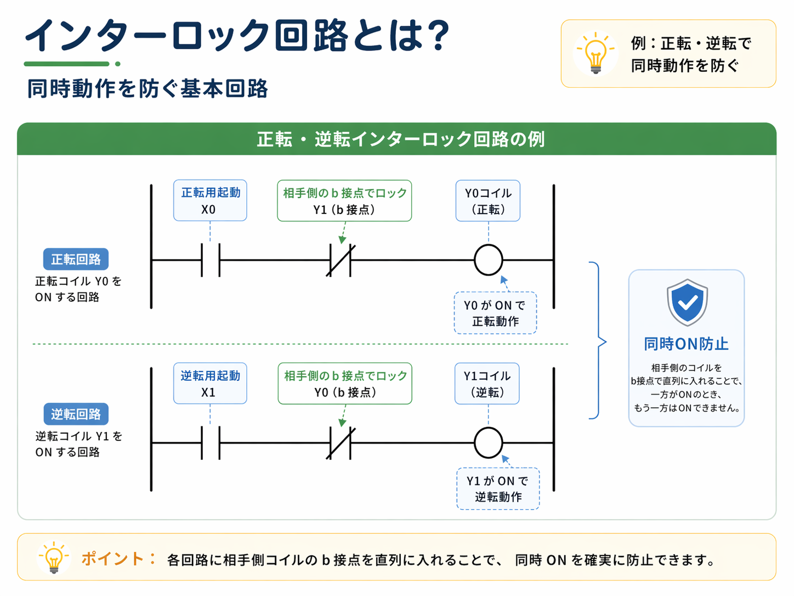

この記事が向いている人
- 正転・逆転などの同時動作防止を整理したい人
- 自己保持とインターロックの違いを知りたい人
- 切り替わらない原因をラダー上で追いたい人
インターロック回路は、同時に動いてはいけないものが同時に動かないようにするための回路です。
代表的なのは、モータの正転・逆転です。正転と逆転が同時に入ると、制御としても機械としてもよくないため、片方が入っている時はもう片方が入らないようにします。
そのために使うのが、相手側の接点です。正転側の回路には逆転側のb接点を入れ、逆転側の回路には正転側のb接点を入れるようにして、相互にロックします。

先輩インターロックは「相手が入っていたら自分は入れない」という見方をすると追いやすいです。自己保持とは役割が違います。

新人自分を保持する回路じゃなくて、相手側を止めるための回路なんですね。
正転・逆転、前進・後退、上昇・下降など、片方だけ動いてほしい回路でよく使います。
設備では、片方だけ動けばよい場面がよくあります。たとえば、正転と逆転、前進と後退、上昇と下降のような動きです。
こうした回路で両方が同時に入ってしまうと、動作として成立しないだけでなく、接触器やモータ、機械側に負担をかけることがあります。
正転と逆転が同時に入らないよう、相手側の接点で止めます。
シリンダや搬送の向きが同時に成立しないようにします。
昇降動作で上下が同時に入らないようにします。
片方だけ許可したい時に、相互にロックする考え方が使われます。

インターロックは、操作ミスや条件の重なりで同時ONにならないようにする考え方です。現場では、回路上の保険として見ておくと理解しやすいです。
自己保持とインターロックは、同じラダーの中に一緒に入っていることが多いので混ざって見えやすいです。
ただし、役割は違います。自己保持は一度入った出力を続けるための回路で、インターロックは同時に入ってはいけない出力を止めるための回路です。
| 項目 | 自己保持 | インターロック |
|---|---|---|
| 目的 | 運転を続ける | 同時ONを防ぐ |
| 見る接点 | 自分自身の出力接点 | 相手側の出力接点 |
| 代表例 | 起動ボタンを離しても運転継続 | 正転中は逆転を入れない |
自己保持は「続けるため」、インターロックは「同時に入れないため」と役割で分けると、ラダーがかなり追いやすくなります。
正転・逆転のようなインターロック回路では、それぞれの回路に相手側コイルのb接点を直列に入れている形がよくあります。
正転側には逆転側のb接点、逆転側には正転側のb接点を入れます。片方がONすると、もう片方の回路が通らないようになります。

正転起動入力の先に、逆転側Y1のb接点が入っているかを見ます。
逆転起動入力の先に、正転側Y0のb接点が入っているかを見ます。
最終的にY0とY1のどちらがONしているかを確認します。
自分の接点ではなく、相手側の接点でブロックしている点がポイントです。
インターロックは「相手が入っていないから自分が通る」と考えると分かりやすいです。
正転起動入力が入り、逆転側Y1がまだ入っていなければ、Y1のb接点は通ります。
正転が入ると、逆転回路側ではY0のb接点が開き、逆転側Y1は通りません。
逆転起動入力が入り、正転Y0が入っていなければ、正転側Y0のb接点が通ってY1がONできます。
実際の設備では、一度停止してから反対側へ切り替える条件が入っていることもあります。
インターロック回路のトラブルでは、「片方が動かない」「切り替わらない」「相手側が入っているように見える」という状態が出ることがあります。
そういう時は、まず相手側のb接点でブロックされていないかを見ます。

非常停止や停止スイッチ、停止条件で切れていないか確認します。
正転PB・逆転PBなどの入力がちゃんと入っているか見ます。
相手側の出力が入っていて、ブロックされていないか確認します。
自己保持が一緒に入っている回路では、保持状態や解除条件も確認します。

インターロックは同時動作を防ぐための考え方ですが、安全リレーや非常停止回路の代わりにはなりません。安全に関わる部分は安全回路として別に考えます。
インターロックは同時に入ってはいけない出力を止める回路です。
各回路に相手側のb接点を入れる形がよくあります。
自己保持は続けるため、インターロックは防ぐためと分けて見ます。
片方が動かない時は、相手側のb接点で止まっていないか確認します。